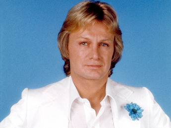
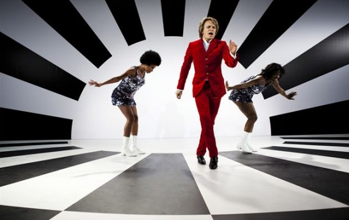
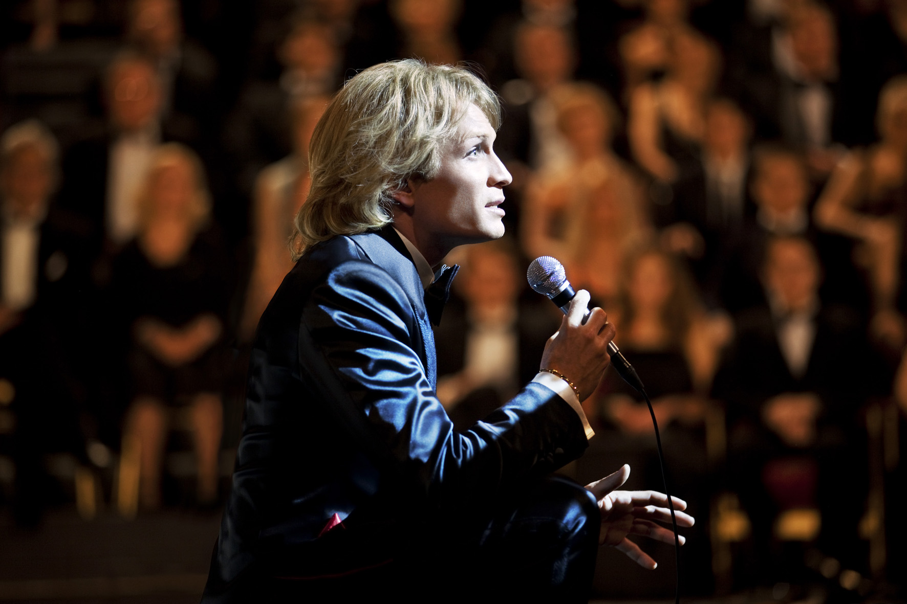

01 février 1939 - 11 mars 1978
Claude François était un chanteur populaire français né le 1 février 1939 en Égypte (à Ismaïlia) et mort le 11 mars 1978 en France (Paris) à l'âge de 39 ans. Il est principalement surnommé Cloclo par ses fans. Claude François à également était un producteur et homme d'affaire important dans le domaine du show-biz français. Claude François a été très célèbre de son vivant, notamment durant les années 60 et 70. Même après sa mort, sa célébrité n’a fait que s'accroître jusqu’à devenir une véritable légende de la chanson française, voir un mythe ! En effet, alors qu’il a vendu 35 millions de disques de son vivant, depuis sa mort jusqu’en 2014, il a vendu 28 millions de disques.
Claude Antoine Marie François
Français
1 février 1939
Ismaïlia, Égypte
3 11 mars 1978 (à 39 ans)
Chanteur, musicien, producteur,
Belles ! Belles ! Belles !
ême si tu revenais
Le lundi au soleil
Le téléphone pleure
Magnolias for Ever
Alexandrie Alexandra
Cette année-là
Comme d’habitude
Le mal-aimé
Le chanteur malheureux
Claude François, tout petit, vit dans une maison bourgeoise d’Ismaïlia jusqu’à ce que les allemands bombardent la ville et détruise la belle villa de ses parents. C’est sa grand-mère du côté de son père qui décide alors de s’en occuper. Claude François est alors entouré d’enfants de toutes origines jusqu’à ce qu’il soit en âge d’aller à l’école.
JMais en 1956, le président Nasser compte bien reprendre ce qui lui appartient en nationalisant le Canal de Suez (lieu stratégique des échanges commerciaux internationaux). La haine des égyptiens envers les colons français et britanniques rend le départ de la famille François très difficile à supporter d’un point de vue physique et psychologique (violences, injures et humiliations sur sa famille…). La famille arrive temporairement à Paris avant d’aller à Monaco, puis à Nice. Ils vivent de manière relativement pauvre, surtout en comparaison de leurs conditions de vies à Ismaïlia. Claude François dort souvent à même le sol, doit voler pour se nourrir et finit même par développer un ulcère de l’estomac en mangeant régulièrement du pain au vinaigre. Son ulcère lui permettra quand même d’éviter le service militaire (qui est de 18 mois à l’époque) lui faisant gagner un temps précieux. Ses débuts à Monte-Carlo En 1958, il commence par jouer du conga dans un groupe d’amis mais doit travailler dans une banque pour obtenir un vrai salaire. Grâce à sa persévérance, il finit par trouver un poste de percussionniste au Sporting Club de Monte Carlo dans lequel il finit chanteur. Son interprétation de la chanson Mustapha de Bob Azam lui offre un certain succès. Il prend des cours à l’Académie nationnale de musique ainsi que des cours particuliers spécialement dédiés à l’amélioration de son chant. Il devient, en 1959, le chanteur de l’orchestre de Marcel Blanchi à l’hôtel Provençal de Juan-les-Pins, dans lequel il gagne un salaire lui permettant de vivre dignement, lui et sa famille. Même si sa mère l’encourage dans sa carrière d’artiste, son père désapprouve totalement ce choix car il aurait souhaité que son fils devienne comptable. Il rencontre la danseuse Janet Woollacott avec qui il va se marier l’année suivante en 1960. Il monte à Paris En 1961, durant l’été, il décide donc de monter sur Paris sur les conseils de Brigitte Bardot et Sacha Distel qu’il a eu la chance de rencontrer. C’est également cette année-là que son père meurt d’un cancer des poumons. C’est à Paris qu’il perçoit le changement radical de la chanson française. L’émission de radio Salut les copains répands sur les ondes nationales la musique rock américaine, et avec elle, le twist et les yéyés. Il retrouve un poste de percutionniste dans le groupe Les Gamblers, mais le salaire est très faible. Il tente alors une audition à la maison de production Fontana qui sera un échec. Son 1er disque En 1962, Claude François enregistre son premier disque Le Nabout twist qui cartonnera en Afrique mais malheureusement pas en France. Il doit donc continuer à jouer avec Les Gamblers durant l’été en descendant avec le groupe dans le sud de la France à Saint-Tropez (au Papagayo). C’est également pendant qu’il est dans le sud de la France que sa femme, Janet Woollacott, qui travaille à l’Olympia, va rencontrer Gilbert Bécaud et quitter Claude François après seulement 2 ans de mariage. Son 1er succès Toujours en 1962, après une nouvelle audition avec les disques Fontana, il parvient à convaincre le directeur qui lui signe un contrat de 5 ans. Il sort son 45 tours Belles ! Belles ! Belles ! qui cartonne et dont il vends 1,7 millions d’exemplaire. Il faut dire qu’il avait mis toute les chances de son côté d’un point du vue marketing en réussissant à faire passer sa chanson 2 fois par jour dans l’émission de radio Salut les copains, en passant à des émissions de télévision grand public et en créant son 1er scopitone (ancêtre du clip vidéo) pour finir à l’Olympia, en chantant en 1ère partie de Spotnicks et Dalida. Sa carrière est lancée C’est grâce à Paul Lederman que la notoriété de Claude François ne va cesser de croître : un impresario doué qui lancera également Michel Polnareff, Mike Brant, Thierry Le Luron, Coluche ou Les Inconnus. Claude François va vite comprendre que son image est aussi importante que ses chansons, notamment lorsqu’un dessinateur du magazine Salut les copains (Michel Bourdais) va dessiner un portrait hyper-réaliste du chanteur. En avril 1963, il se retrouve à nouveau à l’affiche de l’Olympia pour participer à l’Idole des jeunes. En octobre 1963, il sort le disque Si j’avais un marteau (une reprise de If I Had a Hammer de Pete Seeger) qui plafonnera en top des ventes pendant plusieurs jours. Ses 1er disques d’or Claude François reçoit, le 29 octobre 1963, deux disques d’or à l’occasion de sa prestation durant le Musicorama. Le Moulin de Dannemois En 1964, Claude François gagne maintenant très bien sa vie et il en profite pour acheter le Moulin de Dannemois situé dans l’Essonne. Sa demeure secondaire, très belle et vaste, lui permet de proposer à sa mère et sa soeur d’y habiter afin qu’elles retrouvent le confort de ce qu’elles vécurent à la bonne époque en Égypte. Tête d’affiche à l’Olympia Septembre 1964, c’est tout en haut de l’affiche de l’Olympia que Claude François présente son spectacle avec des titres comme J’y pense et puis j’oublie. Il arrive à battre les records de chiffre d’affaire généré à l’Olympia détenus précédemment par Edith Piaf. Sa rencontre avec France Gall Alors qu’il a 25 ans, il rencontre la belle France Gall qui n’a que 17 ans à l’époque. Leur liaison ne durera que 3 ans, jusqu’en 1967. Son accident de scène L’année suivant, en 1965, alors qu’il chante lors d’un concert organisé à Abbeville, la scène se dérobe sous ses pieds : multiples fractures des côtes et 5 semaines sans bouger. Mais pour Claude François, impossible de rester inactif aussi longtemps. Il profite de ce temps pour écrire de nouveaux morceaux dont Même si tu revenais et accouchera de 15 titres en tout au cours de cette même année. Les Claudettes Claude François peut remercier Michel Bourdais qui lui a donné l’idée de créer les Claudettes (ou Clodettes). Le chanteur, désormais accompagné à chaque fois de 4 femmes légèrement vêtues et dansant avec lui, vont provoquer l’emballement des médias et l’hystérie du public à chaque concert, et ce dès leur première apparition à l’Olympia en décembre 1966. Comme d’habitude 1967, touché par sa rupture avec France Gall, Claude François co-écrit Comme d’habitude, un succès national qui se transforme très vite en succès international dès lors que Paul Anka et Frank Sinatra reprenne son titre sous le nom de My Way, suivi plus tard par Elvis Presley, Nina Hagen, Nina Simone et même Sid Vicious. Il divorce officiellement de Janet Woollacott le 13 mars 1967. Il créé sa propre maison de disques Véritable homme d’affaire, Claude François cherche depuis longtemps à être autonome et indépendant, autant d’un point de vue financier qu’artistique. Il créé alors sa propre maison de disque Flèche Productions en 1967 dont le 1er artiste sera une chanteuse du nom de Liliane Saint-Pierre et plus tard Patrick Topaloff et Alain Chamfort. Son 1er fils, Claude Junior Il rencontre la belle Isabelle Forêt, une mannequin qui va accoucher de son 1er fils le 8 juillet 1968, Claude François Junior, dont il cachera l'existence aux médias pendant longtemps. Sa tournée en Afrique C’est en 1968 que Claude François par en tournée en Afrique, et plus particulièrement en Afrique Noire : Niger, Côte d’Ivoire, Gabon, Cameroun, Sénégal, Tchad. La tournée est un énorme succès, à tel point qu’il est invité chez le président Albert Bongo après son concert à Libreville (Gabon) qui a attiré 15 000 spectateurs. Son 2ème fils, Marc François Isabelle Forêt donne naissance à leur second fils le 15 novembre 1969 : Marc François. Tout comme avec Claude Junior, il cache au médias la naissance de son fils pendant un certain temps. 16 jours consécutifs à l’Olympia Désormais toujours accompagné des Claudettes, Claude François va jouer complet 16 jours d’affilée à l’Olympia en novembre 1969. Son show, inspiré des concerts d’artistes américains, est un véritable évènement dans la capitale. Parce que je t'aime mon enfant En 1970, il sort le disque Parce que je t'aime mon enfant qui sera repris 3 ans plus tard par Elvis Presley.
  Le 11 mars 1978, Claude François doit enregistrer l’émission Les Rendez-vous du dimanche avec Michel Drucker à 16h00. A 15h00, il entre dans sa salle de bain. Mais une qualité peut vite se transformer en défaut : c’est la cas de son perfectionnisme poussé à l’extrême qui s’est vite transformé en obsession des choses biens rangées. La lampe fixée au mur de sa salle de bain, juste au-dessus de sa baignoire, n’est pas droite. Claude François décide de la redresser sans savoir qu’une partie des fils en cuivre est dénudée : il y restera collé jusqu’à la mort, électrocuté. Sa compagne de l’époque, Kathalyn Jones, parvient à le décoller sans s'électrocuter. Les pompiers, accompagné du Docteur Noël, sont parvenus à refaire partir son coeur mais seulement pendant 2 minutes. A 16h00, les médias annoncent sa mort : la France entière est émue et choquée.